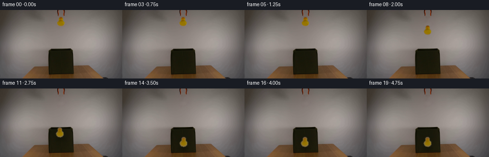
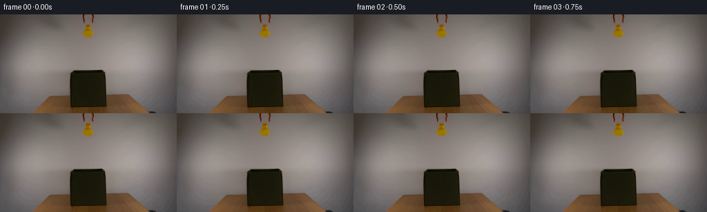
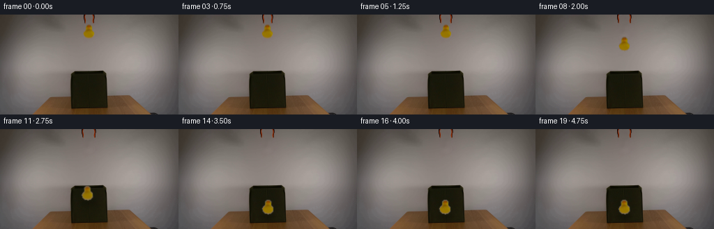
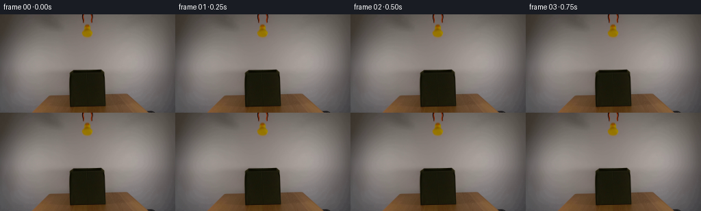

← 本轮 smoke 总览traex/DeepSeek-V4.1-Flash · 0059
text · 256×144 · 4.0 FPS · 20 帧 · 状态 complete · 输出 tokens 50264
原始任务Static locked-off single-shot with fixed frame throughout filmed with constant framerate in real-time. The scene shows a realistic scientific demonstration. The scene only contains the described setup and actions. An orange-black grabber tool is suspended above the open dark green fabric box on a wooden table. The orange-black grabber tool releases the yellow rubber duck above the open dark green fabric box.
当前保存结果
已保存候选与代码修改
这里按时间展示外部捕获的候选，每份均可单独播放。保存新版本不等于完成视觉检查；下方工具证据记录实际看过的图。
候选 01 · 2026-11-09T02:20:46.674310+00:00 · 点开播放与检查图
inspection.png

transition_check.png

代码变化
--- 上一保存版本
+++ 本次保存版本
@@ -0,0 +1,146 @@
+from pathlib import Path
+
+import cv2
+import numpy as np
+from PIL import Image
+
+import artifact_io
+
+
+CASE_DIR = Path(__file__).resolve().parent
+WIDTH, HEIGHT, FRAME_COUNT = 256, 144, 20
+
+
+def duck_mask(source):
+ hsv = cv2.cvtColor(source, cv2.COLOR_RGB2HSV)
+ hue, sat, value = cv2.split(hsv)
+ mask = (
+ (hue >= 7)
+ & (hue <= 42)
+ & (sat >= 70)
+ & (value >= 55)
+ ).astype(np.uint8)
+ region = np.zeros_like(mask)
+ region[12:37, 115:141] = 1
+ mask *= region
+
+ count, labels, stats, _ = cv2.connectedComponentsWithStats(mask, 8)
+ keep = np.zeros_like(mask)
+ for label in range(1, count):
+ if stats[label, cv2.CC_STAT_AREA] >= 20:
+ keep[labels == label] = 1
+ keep = cv2.morphologyEx(keep, cv2.MORPH_CLOSE, np.ones((3, 3), np.uint8))
+ return keep
+
+
+def make_clean_plate(source, mask):
+ expanded = cv2.dilate(mask, np.ones((3, 3), np.uint8), iterations=1)
+ return cv2.inpaint(source, expanded * 255, 5, cv2.INPAINT_TELEA)
+
+
+def make_duck_sprite(source, mask):
+ ys, xs = np.where(mask)
+ x0, x1 = int(xs.min()) - 2, int(xs.max()) + 3
+ y0, y1 = int(ys.min()) - 2, int(ys.max()) + 3
+ rgb = source[y0:y1, x0:x1].copy()
+ alpha = mask[y0:y1, x0:x1].astype(np.float32)
+ alpha = cv2.GaussianBlur(alpha, (3, 3), 0.55)
+ return rgb, alpha, (x0, y0)
+
+
+def duck_offsets():
+ held = [0.0] * 5
+ falling = [0.8, 3.5, 9.0, 18.0, 31.0, 48.0, 68.0, 88.0]
+ settle = [85.5, 88.8, 87.6, 88.4, 88.2, 88.2, 88.2]
+ return np.asarray(held + falling + settle, dtype=np.float32)
+
+
+def warp_sprite(rgb, alpha, angle):
+ h, w = alpha.shape
+ center = ((w - 1) * 0.5, (h - 1) * 0.5)
+ matrix = cv2.getRotationMatrix2D(center, angle, 1.0)
+ warped_rgb = cv2.warpAffine(
+ rgb,
+ matrix,
+ (w, h),
+ flags=cv2.INTER_LINEAR,
+ borderMode=cv2.BORDER_REFLECT,
+ )
+ warped_alpha = cv2.warpAffine(
+ alpha,
+ matrix,
+ (w, h),
+ flags=cv2.INTER_LINEAR,
+ borderMode=cv2.BORDER_CONSTANT,
+ borderValue=0,
+ )
+ return warped_rgb, warped_alpha
+
+
+def composite_duck(frame, rgb, alpha, x, y):
+ h, w = alpha.shape
+ x0, y0 = int(x), int(y)
+ x1, y1 = x0 + w, y0 + h
+ dst = frame[y0:y1, x0:x1].astype(np.float32)
+ a = alpha[:, :, None]
+ blended = rgb.astype(np.float32) * a + dst * (1.0 - a)
+ frame[y0:y1, x0:x1] = np.clip(blended + 0.5, 0, 255).astype(np.uint8)
+
+
+def add_landing_shadow(frame, x, y, strength):
+ if strength <= 0:
+ return
+ overlay = frame.astype(np.float32)
+ center = (int(x), int(y))
+ shadow = np.zeros((HEIGHT, WIDTH), np.float32)
+ cv2.ellipse(shadow, center, (11, 4), 0, 0, 360, 1.0, -1)
+ shadow = cv2.GaussianBlur(shadow, (0, 0), 3.0)
+ shade = 1.0 - strength * shadow[:, :, None]
+ frame[:] = np.clip(overlay * shade + 0.5, 0, 255).astype(np.uint8)
+
+
+def main():
+ source = np.asarray(Image.open(CASE_DIR / "first_frame.png").convert("RGB"))
+ assert source.shape == (HEIGHT, WIDTH, 3)
+
+ mask = duck_mask(source)
+ clean = make_clean_plate(source, mask)
+ sprite_rgb, sprite_alpha, (sprite_x, sprite_y) = make_duck_sprite(source, mask)
+ offsets = duck_offsets()
+
+ frames = np.empty((FRAME_COUNT, HEIGHT, WIDTH, 3), dtype=np.uint8)
+ frames[0] = source
+
+ for index in range(1, FRAME_COUNT):
+ frame = clean.copy()
+ offset = offsets[index]
+
+ if index >= 7:
+ motion = float(offsets[index] - offsets[index - 1])
+ blur = min(2.2, max(0.0, motion - 6.0) * 0.07)
+ if blur > 0.05:
+ sprite_rgb = cv2.GaussianBlur(sprite_rgb, (0, 0), blur)
+
+ angle = 0.0
+ if index >= 9:
+ angle = float(np.clip((offset - 30.0) * 0.08, -2.5, 2.5))
+ angle *= float(np.sin((index - 8) * 0.7))
+ warped_rgb, warped_alpha = warp_sprite(sprite_rgb, sprite_alpha, angle)
+
+ sway = 0.0
+ if index >= 8:
+ sway = 1.1 * np.sin((index - 7) * 1.1)
+ x = sprite_x + sway
+ y = sprite_y + offset
+
+ shadow_y = min(126.0, y + sprite_alpha.shape[0] + 1.0)
+ shadow_strength = float(np.clip((offset - 15.0) / 70.0, 0.0, 1.0))
+ add_landing_shadow(frame, 127.0, shadow_y, 0.20 * shadow_strength)
+ composite_duck(frame, warped_rgb, warped_alpha, x, y)
+ frames[index] = frame
+
+ artifact_io.save(frames, CASE_DIR)
+
+
+if __name__ == "__main__":
+ main()
候选 02 · 2026-11-09T02:21:43.354234+00:00 · 点开播放与检查图
inspection.png

transition_check.png

代码变化
--- 上一保存版本
+++ 本次保存版本
@@ -33,9 +33,30 @@
return keep
-def make_clean_plate(source, mask):
- expanded = cv2.dilate(mask, np.ones((3, 3), np.uint8), iterations=1)
- return cv2.inpaint(source, expanded * 255, 5, cv2.INPAINT_TELEA)
+def gripper_masks(source):
+ hsv = cv2.cvtColor(source, cv2.COLOR_RGB2HSV)
+ hue, sat, value = cv2.split(hsv)
+ colored = (sat > 65) & (hue < 30) & (value > 45)
+ dark = value < 78
+ detail = (colored | dark).astype(np.uint8)
+
+ masks = []
+ for x0, x1 in ((117, 125), (130, 138)):
+ mask = np.zeros_like(detail)
+ mask[0:13, x0:x1] = detail[0:13, x0:x1]
+ count, labels, stats, _ = cv2.connectedComponentsWithStats(mask, 8)
+ clean = np.zeros_like(mask)
+ for label in range(1, count):
+ if stats[label, cv2.CC_STAT_AREA] >= 3:
+ clean[labels == label] = 1
+ masks.append(clean)
+ return masks
+
+
+def make_clean_plate(source, duck, grippers):
+ removed = (duck | grippers[0] | grippers[1]).astype(np.uint8)
+ expanded = cv2.dilate(removed, np.ones((3, 3), np.uint8), iterations=1)
+ return cv2.inpaint(source, expanded * 255, 4, cv2.INPAINT_TELEA)
def make_duck_sprite(source, mask):
@@ -45,6 +66,13 @@
rgb = source[y0:y1, x0:x1].copy()
alpha = mask[y0:y1, x0:x1].astype(np.float32)
alpha = cv2.GaussianBlur(alpha, (3, 3), 0.55)
+ return rgb, alpha, (x0, y0)
+
+
+def make_gripper_sprite(source, mask, bounds):
+ x0, y0, x1, y1 = bounds
+ rgb = source[y0:y1, x0:x1].copy()
+ alpha = cv2.GaussianBlur(mask[y0:y1, x0:x1].astype(np.float32), (3, 3), 0.35)
return rgb, alpha, (x0, y0)
@@ -104,22 +132,34 @@
assert source.shape == (HEIGHT, WIDTH, 3)
mask = duck_mask(source)
- clean = make_clean_plate(source, mask)
- sprite_rgb, sprite_alpha, (sprite_x, sprite_y) = make_duck_sprite(source, mask)
+ grippers = gripper_masks(source)
+ clean = make_clean_plate(source, mask, grippers)
+ base_rgb, sprite_alpha, (sprite_x, sprite_y) = make_duck_sprite(source, mask)
+ left_prong = make_gripper_sprite(source, grippers[0], (117, 0, 125, 14))
+ right_prong = make_gripper_sprite(source, grippers[1], (130, 0, 138, 14))
offsets = duck_offsets()
frames = np.empty((FRAME_COUNT, HEIGHT, WIDTH, 3), dtype=np.uint8)
frames[0] = source
for index in range(1, FRAME_COUNT):
+ if index <= 3:
+ frames[index] = source
+ continue
+
frame = clean.copy()
offset = offsets[index]
if index >= 7:
motion = float(offsets[index] - offsets[index - 1])
blur = min(2.2, max(0.0, motion - 6.0) * 0.07)
- if blur > 0.05:
- sprite_rgb = cv2.GaussianBlur(sprite_rgb, (0, 0), blur)
+ sprite_rgb = (
+ cv2.GaussianBlur(base_rgb, (0, 0), blur)
+ if blur > 0.05
+ else base_rgb
+ )
+ else:
+ sprite_rgb = base_rgb
angle = 0.0
if index >= 9:
@@ -137,6 +177,12 @@
shadow_strength = float(np.clip((offset - 15.0) / 70.0, 0.0, 1.0))
add_landing_shadow(frame, 127.0, shadow_y, 0.20 * shadow_strength)
composite_duck(frame, warped_rgb, warped_alpha, x, y)
+
+ opening = float(np.clip((index - 3) * 0.65, 0.0, 2.2))
+ left_rgb, left_alpha, (left_x, left_y) = left_prong
+ right_rgb, right_alpha, (right_x, right_y) = right_prong
+ composite_duck(frame, left_rgb, left_alpha, left_x - opening, left_y)
+ composite_duck(frame, right_rgb, right_alpha, right_x + opening, right_y)
frames[index] = frame
artifact_io.save(frames, CASE_DIR)
可观测工具行为
命令 1 · 2026-11-09T02:14:41.386034+00:00/bin/bash -c "pwd && rg --files -g '"'!*.mp4'"' -g '"'!*.mov'"' | sort"
exit 0 命令 2 · 2026-11-09T02:14:41.502400+00:00/bin/bash -c "sed -n '1,240p' prompt.txt"
exit 0 命令 3 · 2026-11-09T02:14:41.815913+00:00/bin/bash -c "sed -n '1,280p' GENERATION_RULES.md"
exit 0 命令 4 · 2026-11-09T02:14:41.918487+00:00/bin/bash -c "find . -maxdepth 2 -type f -printf '%p %s bytes\\n' | sort && file first_frame.png 2>/dev/null || true"
exit 0 命令 5 · 2026-11-09T02:14:59.151121+00:00/bin/bash -c "sed -n '1,260p' artifact_io.py"
exit 0 命令 6 · 2026-11-09T02:14:59.856493+00:00/bin/bash -c "python - <<'PY'
from PIL import Image
import numpy as np
im=Image.open('first_frame.png')
print(im.mode, im.size)
a=np.asarray(im)
print('shape',a.shape,'dtype',a.dtype,'minmax',a.min(),a.max())
# mean,std per channel and unique colors
print('mean',a.reshape(-1,3).mean(0),'std',a.reshape(-1,3).std(0))
print('unique',len(np.unique(a.reshape(-1,3),axis=0)))
# dominant colors exact
cols,cnts=np.unique(a.reshape(-1,3),axis=0,return_counts=True)
for i in np.argsort(cnts)[-30:][::-1]: print(cnts[i], cols[i])
PY"exit 0 命令 7 · 2026-11-09T02:15:00.079451+00:00/bin/bash -c "python - <<'PY'
from PIL import Image
import numpy as np
a=np.asarray(Image.open('first_frame.png').convert('RGB'))
# 64x36 downsample median-ish using PIL box and print classified symbols based hue/value
im=Image.fromarray(a).resize((64,36),Image.Resampling.BOX)
b=np.asarray(im).astype(float)
mx=b.max(2); mn=b.min(2); d=mx-mn
h=np.zeros_like(mx)
r,g,bl=[b[:,:,i] for i in range(3)]
mask=d>1e-6
# HSV hue
idx=(mx==r)&mask; h[idx]=((g[idx]-bl[idx])/d[idx])%6
idx=(mx==g)&mask; h[idx]=(bl[idx]-r[idx])/d[idx]+2
idx=(mx==bl)&mask; h[idx]=(r[idx]-g[idx])/d[idx]+4
h*=60
s=d/(mx+1e-6)
chars=[]
for y in range(36):
row=''
for x in range(64):
R,G,B=b[y,x]
if mx[y,x]<30: c=' '
elif mx[y,x]<55: c='.'
elif mx[y,x]<85: c=':'
elif mx[y,x]<120: c='o'
elif mx[y,x]<160: c='O'
else: c='#'
# color chars override
if s[y,x]>.35:
if 15<=h[y,x]<45: c='y'
elif 45<=h[y,x]<75: c='Y'
elif 75<=h[y,x]<160: c='G'
elif 160<=h[y,x]<220: c='B'
elif 220<=h[y,x]<280: c='P'
elif (h[y,x]>=340 or h[y,x]<15) and R>90: c='R'
row+=c
chars.append(row)
print('\\n'.join(chars))
PY"exit 0 命令 8 · 2026-11-09T02:15:16.209475+00:00/bin/bash -c "python - <<'PY'
try:
import cv2; print('cv2',cv2.__version__)
except Exception as e: print('no cv2',e)
try:
import scipy; print('scipy',scipy.__version__)
except Exception as e: print('no scipy',e)
try:
import sklearn; print('sklearn',sklearn.__version__)
except Exception as e: print('no sklearn',e)
PY"exit 0 命令 9 · 2026-11-09T02:15:33.295488+00:00/bin/bash -c "python - <<'PY'
from PIL import Image
import numpy as np
from sklearn.cluster import MiniBatchKMeans
im=np.asarray(Image.open('first_frame.png').convert('RGB'))
p=im.reshape(-1,3)
km=MiniBatchKMeans(16,random_state=1,n_init=4,batch_size=4096).fit(p)
l=km.labels_.reshape(im.shape[:2]); c=km.cluster_centers_.round().astype(int)
for i in range(16):
ys,xs=np.where(l==i)
print(i, len(xs), 'center',c[i], 'bbox', (xs.min(),ys.min(),xs.max(),ys.max()),'meanxy',(xs.mean().round(1),ys.mean().round(1)))
PY"exit 0 命令 10 · 2026-11-09T02:15:51.090872+00:00/bin/bash -c "python - <<'PY'
import cv2, numpy as np
from PIL import Image
a=np.asarray(Image.open('first_frame.png').convert('RGB'))
hsv=cv2.cvtColor(a,cv2.COLOR_RGB2HSV)
H,S,V=[hsv[:,:,i] for i in range(3)]
# broad categories count bbox
masks={
'yellow':(H>=20)&(H<=40)&(S>=100)&(V>=80),
'orange':(H>=5)&(H<20)&(S>=100)&(V>=60),
'green':(H>=35)&(H<=85)&(S>=30)&(V>=20),
'dark':(V<60),
'red':((H<8)|(H>170))&(S>80)&(V>70),
'bright':V>140,
}
for name,m in masks.items():
n,lab,stats,cent=cv2.connectedComponentsWithStats(m.astype(np.uint8),8)
comps=sorted([(stats[i,cv2.CC_STAT_AREA], tuple(stats[i,:4]), tuple(np.round(cent[i],1))) for i in range(1,n)],reverse=True)[:15]
print('\\n',name,'pixels',m.sum())
for c in comps: print(c)
PY"exit 0 命令 11 · 2026-11-09T02:15:55.369654+00:00/bin/bash -c "python - <<'PY'
from PIL import Image
import numpy as np
im=Image.open('first_frame.png')
# upscale with nearest for numeric inspection
im.resize((768,432),Image.Resampling.NEAREST).save('.tmp/source_x3.png')
# crop duck + gripper and box separately
im.crop((105,0,150,45)).resize((360,360),Image.Resampling.NEAREST).save('.tmp/duck_x8.png')
im.crop((85,70,170,144)).resize((510,444),Image.Resampling.NEAREST).save('.tmp/box_x6.png')
PY"exit 0 命令 12 · 2026-11-09T02:16:00.287508+00:00/bin/bash -c "python - <<'PY'
from PIL import Image
import numpy as np
im=np.asarray(Image.open('first_frame.png').convert('RGB'))
# Print local color map each pixel with quantized color symbols in regions, 1 char per pixel perhaps crop
for y0,y1,x0,x1,name in [(0,45,108,147,'duck/gripper'),(70,144,90,170,'box')]:
print('\\n###',name)
for y in range(y0,y1):
row=''
for x in range(x0,x1):
r,g,b=map(int,im[y,x]); mx=max(r,g,b); mn=min(r,g,b); d=mx-mn
if mx<25:c=' '
elif mx<45:c='.'
elif mx<70:c=':'
elif mx<95:c='o'
elif mx<120:c='O'
elif mx<145:c='#'
else:c='@'
# orange/yellow strong color
if r>g*1.22 and g>b*1.25 and r>55:
c='y' if g>80 else 'r'
elif g>r*1.15 and g>b*1.10 and g>35:c='g'
row+=c
print(f'{y:03d} {row}')
PY"exit 0 命令 13 · 2026-11-09T02:16:10.071629+00:00/bin/bash -c "python - <<'PY'
from PIL import Image
import numpy as np
a=np.asarray(Image.open('first_frame.png').convert('RGB')).astype(int)
# print rows 0..40 colors for x 112..145 with chars based classification
# classifications exact ranges
for y in range(0,42):
row=''
for x in range(112,146):
r,g,b=a[y,x]
if max(r,g,b)<20: c='K'
elif r>g+25 and g>b+20:
if r>110 and g>75: c='Y'
elif r>85 and g>45:c='O'
else:c='o'
elif max(r,g,b)-min(r,g,b)<12:
if max(r,g,b)<45:c='k'
elif max(r,g,b)<80:c='d'
elif max(r,g,b)<115:c='m'
else:c='w'
elif r>g and g>b: c='t'
else:c='?'
row+=c
print(f'{y:02d} {row}')
# exact per row bounding boxes of saturated yellow/orange in crop
for y in range(0,45):
m=[]
for x in range(100,160):
r,g,b=a[y,x]
if r>g+18 and g>b+10 and r>70: m.append(x)
if m: print('col',y,min(m),max(m),len(m))
PY"exit 0 命令 14 · 2026-11-09T02:16:24.255059+00:00/bin/bash -c "python - <<'PY'
from PIL import Image
import numpy as np, cv2
a=np.asarray(Image.open('first_frame.png').convert('RGB'))
hsv=cv2.cvtColor(a,cv2.COLOR_RGB2HSV)
for s in [30,40,50,60,70,80,90,100]:
m=(hsv[:,:,1]>s)&(hsv[:,:,0]>10)&(hsv[:,:,0]<45)
n,l,st,ce=cv2.connectedComponentsWithStats(m.astype('uint8'),8)
comps=sorted([(st[i,4],tuple(st[i,:4]),tuple(np.round(ce[i],1))) for i in range(1,n)],reverse=True)[:5]
print('S',s,'pix',m.sum(), comps)
# bbox around yellow region details row colors x range
print('Sample duck colors:')
for y,x in [(16,127),(20,127),(25,127),(30,127),(26,134),(26,120),(14,127),(33,127),(18,128),(18,126),(25,123),(25,132)]: print((x,y),a[y,x],hsv[y,x])
PY"exit 0 命令 15 · 2026-11-09T02:16:40.571609+00:00/bin/bash -c "python - <<'PY'
from PIL import Image
import numpy as np
a=np.asarray(Image.open('first_frame.png').convert('RGB'))
for y in range(0,14):
print('row',y)
for x in range(116,140):
r,g,b=a[y,x]
if max(r,g,b)-min(r,g,b)>25 or max(r,g,b)<80:
print(f' {x}:{r},{g},{b}',end='')
print()
PY"exit 0 命令 16 · 2026-11-09T02:16:44.874870+00:00/bin/bash -c "python - <<'PY'
from PIL import Image
import numpy as np
a=np.asarray(Image.open('first_frame.png').convert('RGB'))
# print pixels grid around yellow with rgb compact
for y in range(13,35):
row=[]
for x in range(116,141):
r,g,b=a[y,x]
if r>g*1.25 and g>b*1.3:
row.append((x,r,g,b))
print(y, row[:3], row[-3:],len(row))
# backgrounds at rows around duck, outside shape
for y in [12,13,14,15,20,25,30,33,34,35,36,40,50,60,70,75,78,79,80]:
print(y, [(x,a[y,x].tolist()) for x in [112,115,118,138,141,145,150]])
PY"exit 0 命令 17 · 2026-11-09T02:16:56.347174+00:00/bin/bash -c "python - <<'PY'
from PIL import Image
import numpy as np, colorsys
a=np.asarray(Image.open('first_frame.png').convert('RGB'))
# hue/sat/value char map duck crop x117..138 y10..37, 2 chars per pixel maybe
for y in range(10,38):
s=''
for x in range(116,140):
r,g,b=[int(v) for v in a[y,x]]
h,sat,v=colorsys.rgb_to_hsv(r/255,g/255,b/255); h*=360
if r>g*1.22 and g>b*1.25 and sat>.35:
if v>.54: c='Y'
elif v>.45:c='y'
else:c='o'
elif sat<.13:
if v<.22:c='@'
elif v<.33:c='#'
elif v<.44:c='+'
elif v<.54:c='-'
else:c='.'
elif h<35: c='r'
else:c='?'
s+=c
print(f'{y:02d} {s}')
PY"exit 0 命令 18 · 2026-11-09T02:17:17.176363+00:00/bin/bash -c "python - <<'PY'
import cv2, numpy as np
from PIL import Image
a=np.asarray(Image.open('first_frame.png').convert('RGB'))
g=cv2.cvtColor(a,cv2.COLOR_RGB2GRAY).astype(float)
# print edge gradient row ranges / dark threshold bboxes by region
for y in range(70,144,4):
row=g[y]
# darkest contiguous run below 60
m=row<60
idx=np.where(m)[0]
if len(idx):
# groups
groups=np.split(idx,np.where(np.diff(idx)>1)[0]+1)
groups=[(q[0],q[-1],round(row[q].mean(),1)) for q in groups if len(q)>=3]
print(y,groups)
# bounding of dark region x50..210 y75..140
roi=g[75:140,50:210]
for t in [30,40,50,60,70,80]:
m=roi<t
n,l,st,ce=cv2.connectedComponentsWithStats(m.astype('uint8'),8)
comps=sorted([(st[i,4],tuple((st[i,:4]+[50,75,0,0]).tolist())) for i in range(1,n)],reverse=True)[:3]
print('th',t,comps)
PY"exit 0 命令 19 · 2026-11-09T02:17:48.088393+00:00/bin/bash -c "python - <<'PY'
from PIL import Image
import numpy as np, colorsys
a=np.asarray(Image.open('first_frame.png').convert('RGB'))
for y in [0,3,6,9,12,13]:
print('row',y)
for x in range(116,140):
r,g,b=map(int,a[y,x]); h,s,v=colorsys.rgb_to_hsv(r/255,g/255,b/255)
print(f'{x}:{r:3},{g:3},{b:3} s{s:.2f}',end=' | ')
print()
PY"exit 0 命令 20 · 2026-11-09T02:17:52.604881+00:00/bin/bash -c "python - <<'PY'
from PIL import Image
import numpy as np
a=np.asarray(Image.open('first_frame.png').convert('RGB')).astype(float)
# print gradients around edges of yellow: background behind by interpolating nearest nonyellow rows/cols
for y in range(14,35):
x=127
# find left right where not yellow using ratio
good=[]
for xx in range(100,155):
r,g,b=a[y,xx]
if not (r>g*1.25 and g>b*1.3 and r>70): good.append(xx)
l=max([xx for xx in good if xx<x],default=None); rr=min([xx for xx in good if xx>x],default=None)
print(y, l,a[y,l].round().astype(int) if l else None, rr,a[y,rr].round().astype(int) if rr else None)
PY"exit 0 命令 21 · 2026-11-09T02:18:33.444751+00:00/bin/bash -c "python - <<'PY'
from PIL import Image
import numpy as np, cv2
img=np.asarray(Image.open('first_frame.png').convert('RGB'))
hsv=cv2.cvtColor(img,cv2.COLOR_RGB2HSV)
H,S,V=[hsv[:,:,i] for i in range(3)]
m=((H>=7)&(H<=55)&(S>=75)&(V>=65))
roi=np.zeros_like(m); roi[10:37,114:142]=1
m=m&roi
n,l,st,ce=cv2.connectedComponentsWithStats(m.astype('uint8'),8)
for i in range(1,n):
if st[i,4]>10: print(i,st[i].tolist(),ce[i].tolist())
# largest
idx=1+np.argmax(st[1:,4]); core=(l==idx).astype('uint8')
print('core',core.sum(),st[idx].tolist())
PY"exit 0 命令 22 · 2026-11-09T02:18:37.480188+00:00/bin/bash -c "python - <<'PY'
from PIL import Image
import numpy as np, cv2
im=np.asarray(Image.open('first_frame.png').convert('RGB'))
g=cv2.cvtColor(im,cv2.COLOR_RGB2GRAY)
# output matrix of exact source values for rows 74..90 x 90..170 sampled every 2 pixels
for y in range(74,92,2):
print(y,' '.join(f'{g[y,x]:3d}' for x in range(90,171,4)))
PY"exit 0 命令 23 · 2026-11-09T02:18:48.634795+00:00/bin/bash -c "python - <<'PY'
from PIL import Image
import numpy as np, cv2
im=np.asarray(Image.open('first_frame.png').convert('RGB'))
hsv=cv2.cvtColor(im,cv2.COLOR_RGB2HSV)
for y in range(10,37):
row=''
for x in range(114,143):
h,s,v=map(int,hsv[y,x])
if 7<=h<=45 and s>=75 and v>=50: c='#'
elif 7<=h<=45 and s>=45 and v>=45: c='+'
elif v<70:c='.'
else:c=' '
row+=c
print(f'{y:02d} {row}')
PY"exit 0 命令 24 · 2026-11-09T02:18:53.047037+00:00/bin/bash -c "python - <<'PY'
from PIL import Image
import numpy as np
a=np.asarray(Image.open('first_frame.png').convert('RGB')).astype(float)
# examine table clean plate relation: background RGB at y 81..144 left/right. Fit smooth polynomial per channel on non-box (x<98 or x>155)
ys,xs=np.mgrid[0:a.shape[0],0:a.shape[1]]
roi=(ys>=79)&((xs<=97)|(xs>=158))
for ch in range(3):
vals=a[:,:,ch][roi]
# just report row means edges and center expected linear gradient
print('ch',ch)
for y in [80,90,100,110,120,130,140]:
print(y, np.round(a[y,90:170:10,ch],1))
PY"exit 0 命令 25 · 2026-11-09T02:18:57.430696+00:00/bin/bash -c "python - <<'PY'
from PIL import Image
import numpy as np, cv2
im=np.asarray(Image.open('first_frame.png').convert('RGB'))
hsv=cv2.cvtColor(im,cv2.COLOR_RGB2HSV)
# print hue/sat boxes at top gripper: strong colors x115..140 y0..15
for y in range(0,14):
print('row',y,[(x,im[y,x].tolist(),hsv[y,x].tolist()) for x in range(117,140) if hsv[y,x,1]>100 or hsv[y,x,2]<60])
PY"exit 0 命令 26 · 2026-11-09T02:19:09.576606+00:00/bin/bash -c "python - <<'PY'
from PIL import Image
import numpy as np
a=np.asarray(Image.open('first_frame.png').convert('RGB')).astype(float)
# region means for grid cells 16x16 or 32x16
for y in range(0,144,16):
row=[]
for x in range(0,256,32):
r=a[y:y+16,x:x+32]
m=r.reshape(-1,3).mean(0).round().astype(int)
row.append('%3d,%3d,%3d'%tuple(m))
print(f'{y:3d}', ' | '.join(row))
print('regions')
for name,(x0,y0,x1,y1) in {'topbg':(0,0,256,70),'boxsurround':(70,70,220,144),'boxopen':(100,80,155,136),'tablelow':(0,135,256,144),'lefttable':(0,90,90,144),'righttable':(170,90,256,144)}.items():
print(name,a[y0:y1,x0:x1].reshape(-1,3).mean(0).round().astype(int))
PY"exit 0 命令 27 · 2026-11-09T02:19:13.570407+00:00/bin/bash -c "python - <<'PY'
from PIL import Image
import numpy as np
a=np.asarray(Image.open('first_frame.png').convert('RGB')).astype(float)
# gradient behavior of background along x, y at nonobject
for y in [0,20,40,60,70,75,78,79,80,81,82,83,84,85]:
print('y',y,[(x,tuple(a[y,x].round().astype(int))) for x in [0,20,40,60,80,90,95,100,150,155,160,170,180,200,220,240,255]])
PY"exit 0 命令 28 · 2026-11-09T02:19:18.248568+00:00/bin/bash -c "python - <<'PY'
from PIL import Image
import numpy as np, cv2
im=np.asarray(Image.open('first_frame.png').convert('RGB'))
# Sobel edge map values top region
G=cv2.cvtColor(im,cv2.COLOR_RGB2GRAY).astype(np.float32)
gx=cv2.Sobel(G,cv2.CV_32F,1,0,ksize=3); gy=cv2.Sobel(G,cv2.CV_32F,0,1,ksize=3)
mag=np.hypot(gx,gy)
print('max',mag.max())
for y in range(0,16):
print(f'{y:02d}', ''.join('#' if mag[y,x]>100 else '+' if mag[y,x]>50 else '.' if mag[y,x]>20 else ' ' for x in range(110,147)))
PY"exit 0 命令 29 · 2026-11-09T02:19:22.472727+00:00/bin/bash -c "python - <<'PY'
from PIL import Image
import numpy as np
a=np.asarray(Image.open('first_frame.png').convert('RGB')).astype(float)
# estimate clean bg in top region using column medians at each y from x ranges far from gripper
for y in range(0,14):
print(y,'L',a[y,110:119].mean(0).round(1),'R',a[y,137:147].mean(0).round(1),'mid',a[y,123:132].mean(0).round(1))
PY"exit 0 命令 30 · 2026-11-09T02:19:26.282077+00:00/bin/bash -c "python - <<'PY'
from PIL import Image
import numpy as np
a=np.asarray(Image.open('first_frame.png').convert('RGB')).astype(float)
for y in range(0,36):
# strongest reds top region and print x locations
vals=[]
for x in range(114,143):
r,g,b=a[y,x]
if r>70 and r>g*1.5 and r>b*2:
vals.append((x,round(r),round(g),round(b)))
if vals: print(y,vals)
PY"exit 0 命令 31 · 2026-11-09T02:19:30.469374+00:00/bin/bash -c "python - <<'PY'
from PIL import Image
import numpy as np
a=np.asarray(Image.open('first_frame.png').convert('RGB'))
# Print exact 16x16 neighborhoods around gripper columns; one char map saturation high red/orange vs bg
for y in range(0,16):
row=''
for x in range(114,143):
r,g,b=map(int,a[y,x])
mx=max(r,g,b); mn=min(r,g,b)
if r>70 and r>g*1.4 and r>b*2: c='O'
elif mx-mn>20: c='o'
elif mx<50:c='k'
elif mx<80:c='d'
elif mx<110:c='m'
elif mx<130:c='l'
else:c='h'
row+=c
print(y,row)
PY"exit 0 命令 32 · 2026-11-09T02:19:34.276990+00:00/bin/bash -c "python - <<'PY'
from PIL import Image
import numpy as np
a=np.asarray(Image.open('first_frame.png').convert('RGB')).astype(float)
for y in [0,1,2,3,4,5,6,7,8,9,10,11,12]:
print(y, 'x120-124', [(x,tuple(a[y,x].astype(int))) for x in range(119,125)], 'x131-136', [(x,tuple(a[y,x].astype(int))) for x in range(131,137)])
PY"exit 0 命令 33 · 2026-11-09T02:19:38.824121+00:00/bin/bash -c "python - <<'PY'
from PIL import Image
import numpy as np
a=np.asarray(Image.open('first_frame.png').convert('RGB')).astype(float)
# print gradients of image around bottom to inspect box boundary
for y in [79,80,81,82,83,84,85,86,87,88,89,90,91,92,93,94,95,96,97,98,99,100,101,102,103,104,105,106,107,108,109,110,111,112,113,114,115,116,117,118,119,120,121,122,123,124,125,126,127,128,129,130,131,132,133,134,135,136,137,138,139,140,141,142,143]:
pass
# report row values x 96..160 every 4
for y in range(80,144,4):
print(y,' '.join(f'{a[y,x,0]:3.0f}/{a[y,x,1]:3.0f}/{a[y,x,2]:3.0f}' for x in range(96,161,4)))
PY"exit 0 命令 34 · 2026-11-09T02:19:43.170319+00:00/bin/bash -c "python - <<'PY'
from PIL import Image
import numpy as np
a=np.asarray(Image.open('first_frame.png').convert('RGB')).astype(float)
# Top region: gripper looks like two black/orange fingers. Report coordinates of strong edges around x120-122/132-134 each row
for y in range(0,14):
xs=[]
for x in range(114,143):
r,g,b=a[y,x]
if (r>80 and r>g*1.35 and r>b*1.8) or max(r,g,b)<45:
xs.append(x)
print(y,xs)
# report exact means around clean background in top region
for y in [0,6,12,13]:
print('bg',y, a[y,0:110].mean(0).round(1),a[y,146:256].mean(0).round(1))
PY"exit 0 命令 35 · 2026-11-09T02:19:47.274640+00:00/bin/bash -c "python - <<'PY'
from PIL import Image
import numpy as np
a=np.asarray(Image.open('first_frame.png').convert('RGB')).astype(float)
# Estimate background for duck area using linear interpolation between x=112 and x=146 for each y; compare duck visible colors to inferred
for y in [13,14,15,16,18,20,24,28,30,32,33,34,35,36,40,50,60,70,78]:
print('y',y,'bgL',a[y,112].round().astype(int),'bgR',a[y,146].round().astype(int),'midinterp',((a[y,112]+a[y,146])/2).round().astype(int))
PY"exit 0 命令 36 · 2026-11-09T02:19:51.276694+00:00/bin/bash -c "python - <<'PY'
from PIL import Image
import numpy as np
a=np.asarray(Image.open('first_frame.png').convert('RGB')).astype(float)
# report duck mask bounds by row with threshold saturation and hue; all pixels values
for y in range(13,35):
xs=[]
for x in range(112,146):
r,g,b=a[y,x]
if r>g+15 and g>b+10 and r>70: xs.append(x)
if xs: print(y,min(xs),max(xs),len(xs))
PY"exit 0 命令 37 · 2026-11-09T02:19:56.392505+00:00/bin/bash -c "python - <<'PY'
from PIL import Image
import numpy as np
im=np.asarray(Image.open('first_frame.png').convert('RGB'))
# make maps with coordinate axes using pure numeric threshold categories to see entire image rough
# classify yellow duck, dark box, green cloth maybe based hues
hsv=np.asarray(Image.fromarray(im).convert('HSV'))
H,S,V=[hsv[:,:,i].astype(int) for i in range(3)]
# 128x72 downsample max occupancy categories
for yy in range(0,144,2):
row=''
for xx in range(0,256,2):
h=H[yy:yy+2,xx:xx+2];s=S[yy:yy+2,xx:xx+2];v=V[yy:yy+2,xx:xx+2]
# yellow
if ((h>=12)&(h<=40)&(s>120)&(v>70)).sum()>=2:c='Y'
elif ((h<12)&(s>130)&(v>50)).sum()>=2:c='R'
elif (v<55).sum()>=2:c='K'
elif (v<90).sum()>=3:c='.'
else:c=' '
row+=c
print(row)
PY"exit 0 命令 38 · 2026-11-09T02:20:00.685766+00:00/bin/bash -c "python - <<'PY'
from PIL import Image
import numpy as np
a=np.asarray(Image.open('first_frame.png').convert('RGB')).astype(float)
# background estimates top using per-y linear between x=110 and x=146, output coefficients
for y in [0,6,12,13,14,20,30,40,50,60,70,78,79,80]:
L=a[y,110];R=a[y,146]
# predict center
pred=(L*22+R*12)/34 # center x127 from 110 to 146? actually 17/36
pred=(L*(146-127)+R*(127-110))/36
print(y,L.round().astype(int),R.round().astype(int),pred.round().astype(int),a[y,127].round().astype(int))
PY"exit 0 命令 39 · 2026-11-09T02:20:45.648883+00:00/bin/bash -c "python generate.py && python - <<'PY'
from PIL import Image
import numpy as np
src=np.asarray(Image.open('first_frame.png').convert('RGB'))
frames=np.stack([np.asarray(Image.open(f'frames/{i:02d}.png').convert('RGB')) for i in range(20)])
print('frames',frames.shape,'fps=4 duration=5')
print('frame0 exact',np.array_equal(src,frames[0]),'maxdiff',np.abs(src.astype(int)-frames[0].astype(int)).max())
for i in range(20):
d=np.abs(frames[i].astype(int)-frames[max(0,i-1)].astype(int))
print(i,'mean',frames[i].mean(axis=(0,1)).round(1),'changed',np.any(d>0,axis=2).sum(),'max',d.max())
PY"exit 0 命令 40 · 2026-11-09T02:20:53.791439+00:00/bin/bash -c "python - <<'PY'
from PIL import Image
import numpy as np, cv2
src=np.asarray(Image.open('first_frame.png').convert('RGB'))
for i in range(20):
a=np.asarray(Image.open(f'frames/{i:02d}.png').convert('RGB'))
hsv=cv2.cvtColor(a,cv2.COLOR_RGB2HSV)
m=((hsv[:,:,0]>=7)&(hsv[:,:,0]<=45)&(hsv[:,:,1]>=70)&(hsv[:,:,2]>=50)).astype('uint8')
# only duck plausible y 10..125, x100..155
rr=np.zeros_like(m);rr[10:130,100:156]=1;m*=rr
n,l,st,ce=cv2.connectedComponentsWithStats(m,8)
comps=sorted([(st[j,4],tuple(st[j,:4]),tuple(np.round(ce[j],1))) for j in range(1,n)],reverse=True)[:2]
print(i,comps)
PY"exit 0 命令 41 · 2026-11-09T02:20:58.386136+00:00/bin/bash -c "python - <<'PY'
from PIL import Image
import numpy as np
for i in [0,1,5,6,8,10,12,13,16,19]:
a=np.asarray(Image.open(f'frames/{i:02d}.png').convert('RGB'))
# ASCII around duck, crop x110..145 y0..130 downsample 2x2 max saturation
hsv=np.asarray(Image.fromarray(a).convert('HSV'))
print('\\nFRAME',i)
for y in range(0,130,3):
row=''
for x in range(110,146,1):
h,s,v=map(int,hsv[y,x])
if 10<=h<=45 and s>=80 and v>=50: c='Y'
elif max(a[y,x])<50:c='K'
else:c=' '
row+=c
print(f'{y:03d}',row)
PY"exit 0 命令 42 · 2026-11-09T02:21:42.416417+00:00/bin/bash -c "python generate.py && python - <<'PY'
from PIL import Image
import numpy as np, cv2
src=np.asarray(Image.open('first_frame.png').convert('RGB'))
frames=np.stack([np.asarray(Image.open(f'frames/{i:02d}.png').convert('RGB')) for i in range(20)])
print('shape',frames.shape,'dtype',frames.dtype,'frame0 exact',np.array_equal(frames[0],src))
for i,a in enumerate(frames):
hsv=cv2.cvtColor(a,cv2.COLOR_RGB2HSV)
m=((hsv[:,:,0]>=7)&(hsv[:,:,0]<=45)&(hsv[:,:,1]>=70)&(hsv[:,:,2]>=50)).astype('uint8')
roi=np.zeros_like(m);roi[10:130,100:156]=1;m*=roi
n,l,st,ce=cv2.connectedComponentsWithStats(m,8)
comps=sorted([(int(st[j,4]),tuple(int(v) for v in st[j,:4]),tuple(np.round(ce[j],1))) for j in range(1,n) if st[j,4]>20],reverse=True)[:2]
print(i,comps,'mean',np.round(a.mean((0,1)),1))
PY"exit 0 命令 43 · 2026-11-09T02:21:49.130995+00:00/bin/bash -c "python - <<'PY'
from PIL import Image
import numpy as np, cv2
src=np.asarray(Image.open('first_frame.png').convert('RGB'))
# Recreate masks and clean for diagnostics by importing generate functions
import generate
mask=generate.duck_mask(src); gm=generate.gripper_masks(src); clean=generate.make_clean_plate(src,mask,gm)
Image.fromarray(clean).save('.tmp/clean_plate.png')
# diagnostics region diff: top and duck area
for name,(x0,y0,x1,y1) in {'gripperL':(115,0,128,14),'gripperR':(128,0,141,14),'duck':(114,10,142,38),'seamleft':(95,78,103,140),'seamright':(151,78,158,140)}.items():
a=src[y0:y1,x0:x1].astype(int);b=clean[y0:y1,x0:x1].astype(int)
print(name,'mean abs',np.abs(a-b).mean(),'max',np.abs(a-b).max())
# edge continuity along box mouth row on clean plate
for y in [79,80,81,82,83,84,85,136,137]:
g=cv2.cvtColor(clean,cv2.COLOR_RGB2GRAY)
print('row',y,'grad x90..170 max',np.abs(np.diff(g[y,90:171].astype(float))).max())
PY"exit 0 命令 44 · 2026-11-09T02:21:53.636489+00:00/bin/bash -c "python - <<'PY'
from PIL import Image
import numpy as np
for i in [4,5,6,8,10,11,12,13,14,15,19]:
a=np.asarray(Image.open(f'frames/{i:02d}.png').convert('RGB'))
# report top gripper red bbox / counts, compare
b=a[:15,110:145]
# orange pixels
m=(b[:,:,0]>80)&(b[:,:,0]>b[:,:,1]*1.4)&(b[:,:,0]>b[:,:,2]*2)
ys,xs=np.where(m)
print(i,'orange',m.sum(), (xs.min()+110,ys.min(),xs.max()+110,ys.max()) if len(xs) else None)
PY"exit 0 命令 45 · 2026-11-09T02:21:57.942127+00:00/bin/bash -c "python - <<'PY'
from PIL import Image
import numpy as np
for i in [0,4,8,12,15,19]:
a=np.asarray(Image.open(f'frames/{i:02d}.png').convert('RGB')).astype(int)
print('\\nframe',i)
for y in range(0,14,2):
print(f'{y:02d}', ' '.join(f'{a[y,x,0]:3d}/{a[y,x,1]:3d}/{a[y,x,2]:3d}' for x in range(117,139,2)))
PY"exit 0 命令 46 · 2026-11-09T02:22:02.915872+00:00/bin/bash -c "python - <<'PY'
from PIL import Image
import numpy as np
src=np.asarray(Image.open('first_frame.png').convert('RGB')).astype(int)
for i in [4,8,12,19]:
a=np.asarray(Image.open(f'frames/{i:02d}.png').convert('RGB')).astype(int)
d=np.abs(a-src).max(2)
ys,xs=np.where(d>2)
print(i, 'changed bbox', (xs.min(),ys.min(),xs.max(),ys.max()) if len(xs) else None,'n',len(xs))
# bboxes in top and box
for name,(x0,y0,x1,y1) in {'top':(0,0,256,14),'duckzone':(105,10,150,50),'boxzone':(90,75,170,140),'table':(0,140,256,144)}.items():
m=d[y0:y1,x0:x1]>2
print(' ',name,m.sum())
PY"exit 0 命令 47 · 2026-11-09T02:22:09.999807+00:00/bin/bash -c "python - <<'PY'
import generate
from PIL import Image
import numpy as np
im=np.asarray(Image.open('first_frame.png').convert('RGB'))
gm=generate.gripper_masks(im)
for k,m in enumerate(gm):
print('mask',k,'count',m.sum())
for y in range(0,14):
print(''.join('#' if m[y,x] else '.' for x in range(112,142)))
print('bbox',np.where(m)[1].min(),np.where(m)[0].min(),np.where(m)[1].max(),np.where(m)[0].max())
PY"exit 0 命令 48 · 2026-11-09T02:22:16.488279+00:00/bin/bash -c "python - <<'PY'
from PIL import Image
import numpy as np
# Inspect rows/cols of clean plate versus source and average to find likely seams
src=np.asarray(Image.open('first_frame.png').convert('RGB')).astype(int)
clean=np.asarray(Image.open('.tmp/clean_plate.png').convert('RGB')).astype(int)
d=np.abs(clean-src).max(2)
for name,(x0,y0,x1,y1) in {'topall':(0,0,256,14),'duckall':(100,10,160,45),'boxall':(90,75,175,145)}.items():
a=d[y0:y1,x0:x1]
print(name,'mean',a.mean(),'max',a.max())
# output clean top crop to a simple ascii of error per 2 pixels
for y in range(0,14,2):
print(y,''.join('#' if d[y,x]>20 else '+' if d[y,x]>5 else '.' for x in range(100,160)))
PY"exit 0 命令 49 · 2026-11-09T02:22:23.481949+00:00/bin/bash -c "python - <<'PY'
from PIL import Image
import numpy as np
a=np.asarray(Image.open('first_frame.png').convert('RGB')).astype(int)
# Evaluate candidate inpaint masks for duck: saturated and shadow halo by comparing to interpolated bg.
# Print duck row exact RGB to derive clean contour, including anti-aliasing values.
for y in range(12,38):
vals=[]
for x in range(115,141):
r,g,b=a[y,x]
if r>g*1.12 and g>b*1.15 and r>60: vals.append(x)
if vals: print(y,min(vals),max(vals),len(vals))
PY"exit 0 保存候选 2 份；完成命令 49 次；可验证图片返回 0 张。原始 API 响应与完整日志保留在本地。